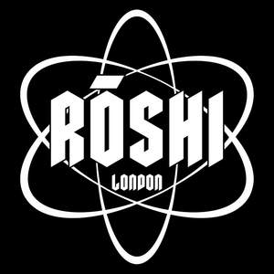
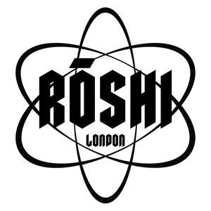

Trade Mark Journal No.2025/011 14 March 2025
UK00004166712 28 February 2025 (25)
Mark 1

Mark 2

- Class 25
- Clothes; Clothing; Denims [clothing]; Jackets [clothing]; Shorts [clothing]; Clothes for sports; Jackets (Stuff -) [clothing]; Stuff jackets [clothing]; Clothes for sport; Gloves [clothing]; Bottoms [clothing]; Jerseys [clothing]; Hoods [clothing]; Clothing for leisure wear; Bodies [clothing]; Tops [clothing]; Belts [clothing]; Belts for clothing; Collars [clothing]; Fabric belts [clothing]; Embroidered clothing; Casual clothing; Trousers; Trousers shorts; Leggings [trousers]; Pants; Casual trousers; Trousers for sweating; Denim pants; Jeans; Men's and women's jackets, coats, trousers, vests; Pantaloons; Jogging pants; Boy shorts [underwear]; Cargo pants; Warm-up pants; Sweat pants; Shorts; Tracksuit bottoms; Dress shirts; Turtleneck shirts; Stretch pants; Open-necked shirts; Sleeved jackets; Blue jeans; Pyjamas; Short-sleeved shirts; Long-sleeved shirts; Sports pants; Fleece shorts; Underwear; Jogging bottoms [clothing]; Jackets; Sweatpants; Skirts; Tank-tops; Sleeveless jackets; Long sleeved vests; Vest tops; Jogging tops; Cap visors; Caps; Caps [headwear]; Beanie hats; Windproof jackets; Bomber jackets; Weatherproof jackets; Wind jackets; T-shirts; Tee-shirts; Shirts; Short-sleeved T-shirts; Printed t-shirts; Sweatshirts; Short-sleeve shirts; Hoodies; Sports shirts; Polo shirts; Sport shirts; Hooded sweatshirts; Hooded sweat shirts; Beanies; Fleece jackets; V-neck sweaters; Turtleneck sweaters; Socks; Pajamas; Top coats; Tank tops; Tops; Hooded tops; Chino pants; Pirate pants; Halter tops; Turtleneck tops; Tracksuit tops; Crop tops; Camisoles; Jumpers [sweaters]; Heavy jackets; Padded jackets; Wooden main bodies of Japanese style wooden clogs; Light-reflecting jackets; Hooded pullovers; Football shirts; Soccer shirts; Casual shirts; Sports shirts with short sleeves; American football shirts; Button down shirts; Polo sweaters; Wristbands [clothing]; Sweaters; Overshirts; Tracksuits; Jogging sets [clothing]; Jogging outfits; Gloves as clothing; Woolen clothing; Windproof clothing; Jackets being sports clothing; Rainproof clothing; Fur jackets; Rain jackets; Reversible jackets; Sweat jackets; Sports jackets; Casual jackets; Bathrobes; Hooded bathrobes; Slippers; Bermuda shorts; Boxer shorts; Swim shorts; Sweat shorts; Boxing shorts; Gym shorts.
Henry Jesus Perez Blanco